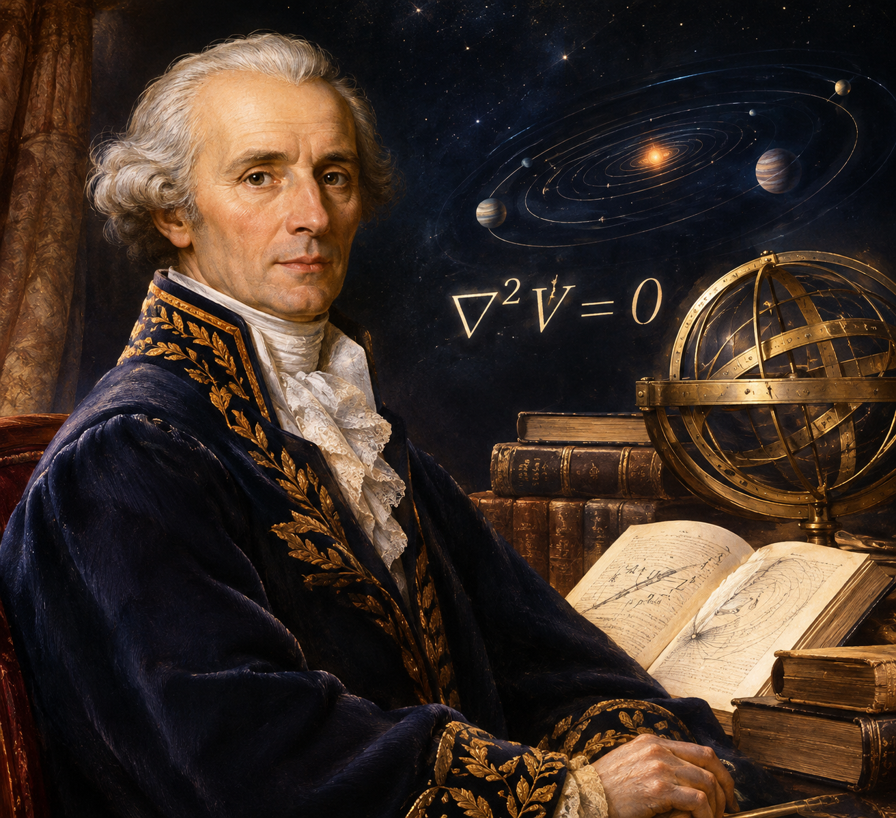
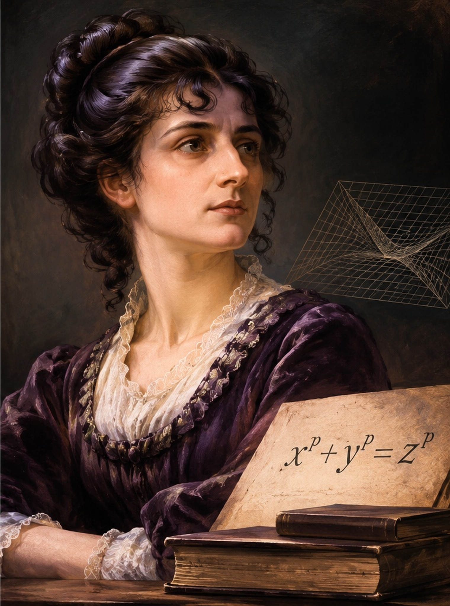
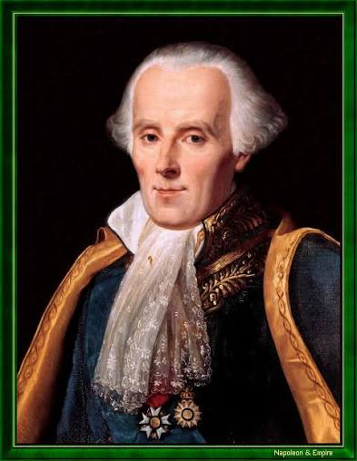
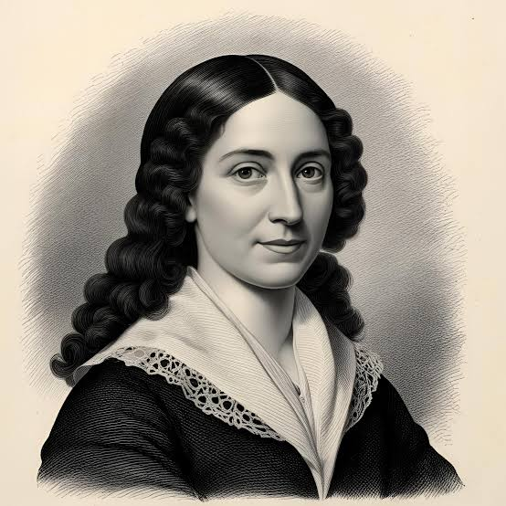
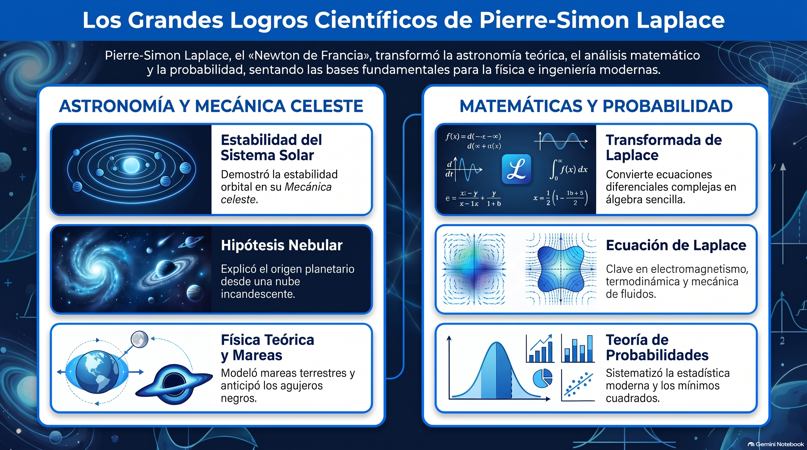
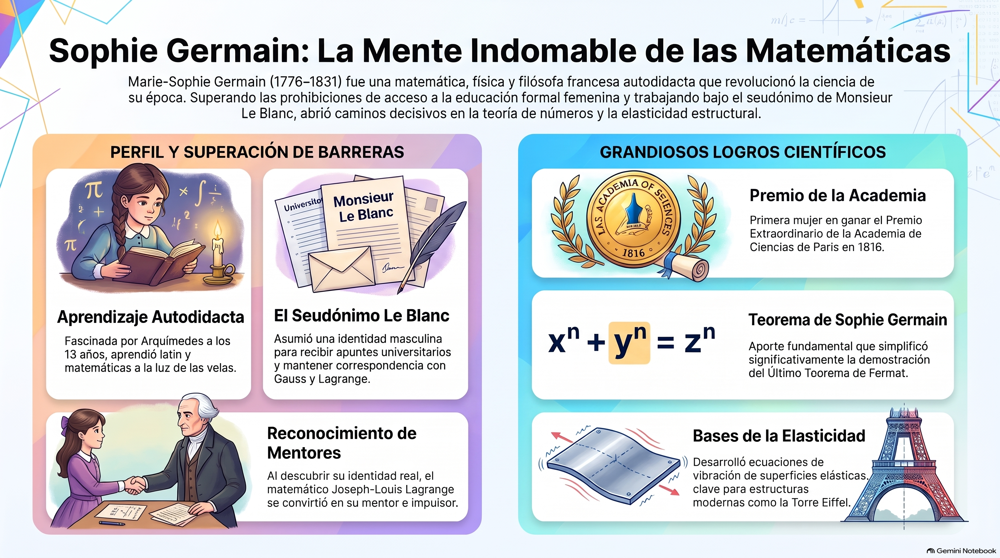

Nace en Normandía
El 23 de marzo nace en Beaumont-en-Auge, Francia.
HISTORIAS QUE CAMBIARON LA FORMA DE PENSAR
Dos mentes extraordinarias. Dos caminos distintos.
Una misma pasión por descifrar el universo.
MÁS QUE UNA BIOGRAFÍA
En este recorrido conocerás a Pierre-Simon Laplace, quien llevó el cálculo a las estrellas y ayudó a dar forma a la teoría de la probabilidad; y a Sophie Germain, quien abrió caminos en la teoría de números y explicó cómo vibran las superficies elásticas.
Explora sus vidas, experimenta con sus ideas y descubre por qué sus preguntas siguen presentes en la ciencia y la tecnología.
01 — LOS PROTAGONISTAS
Selecciona una historia
y comienza a explorar.

Imagen generada por mí con IAEl matemático que quiso comprender el universo.

Imagen generada por mí con IALa matemática que desafió los límites de su época.
EL ARQUITECTO DEL COSMOS
Lo que sabemos es poco.
Lo que no sabemos es inmenso.

1749 — 1827 · FRANCIA
Pierre-Simon, marqués de Laplace, nació el 23 de marzo de 1749 en Beaumont-en-Auge, Normandía, Francia. Procedía de una familia vinculada al comercio de sidra y recibió su primera educación en una escuela benedictina. Más tarde estudió en la Universidad de Caen, donde descubrió su talento para las matemáticas.
Al trasladarse a París, una carta de recomendación le permitió acercarse al matemático Jean le Rond d’Alembert. Impresionado por sus capacidades, d’Alembert lo apoyó y Laplace consiguió un puesto como profesor en la École Militaire.
Vivió durante la Revolución Francesa y los cambios políticos que transformaron Europa. Trabajó en astronomía, física, cálculo y probabilidad. Fue una figura central de la ciencia francesa y recibió los títulos de conde y marqués.
El 23 de marzo nace en Beaumont-en-Auge, Francia.
Estudia en la escuela benedictina y en la Universidad de Caen.
D’Alembert reconoce su talento y lo impulsa académicamente.
Publica Exposition du système du monde y presenta la hipótesis nebular.
Publica su obra monumental en cinco volúmenes sobre mecánica celeste.
Publica una obra fundamental para el desarrollo de la probabilidad.
Expone una reflexión sobre determinismo y conocimiento del universo.
Muere en París el 5 de marzo, a los 77 años.
La ecuación ∇²V = 0 describe situaciones de potencial en regiones sin fuentes ni sumideros. Es fundamental en el estudio de campos gravitatorios, eléctricos y fenómenos físicos.
El símbolo ∇² representa el operador laplaciano. En coordenadas cartesianas tridimensionales: ∇²V = ∂²V/∂x² + ∂²V/∂y² + ∂²V/∂z². Cuando esta suma es cero, se obtiene la ecuación de Laplace.
Una herramienta que convierte funciones y ecuaciones diferenciales en expresiones algebraicas más sencillas, útil para analizar sistemas dinámicos.
Su forma habitual es ℒ{f(t)} = ∫₀∞ e⁻ˢᵗ f(t) dt. Se utiliza en ingeniería, circuitos eléctricos, control automático y procesamiento de señales. La denominación actual honra el trabajo de Laplace en métodos de integración.
Sistematizó métodos de probabilidad, trabajó con probabilidades inversas y desarrolló aplicaciones para interpretar observaciones y datos.
La regla clásica de Laplace se expresa como P(A) = casos favorables / casos posibles, siempre que los resultados sean equiprobables. Su trabajo también impulsó la inferencia estadística y el método de mínimos cuadrados.
Relaciona la distribución binomial con la distribución normal como aproximación bajo determinadas condiciones.
Este resultado permite aproximar probabilidades binomiales cuando el número de ensayos es grande y la probabilidad de éxito no está demasiado cerca de 0 o 1. Es un antecedente importante del desarrollo de la estadística moderna.
Aplicó el análisis matemático al movimiento de planetas y satélites, al problema de la gravitación y al estudio de la estabilidad del sistema solar.
En los cinco volúmenes de Traité de mécanique céleste reunió y amplió métodos matemáticos para describir movimientos celestes y perturbaciones gravitatorias.
Trabajó con integrales definidas, ecuaciones diferenciales, determinantes y métodos de análisis matemático.
Su producción muestra cómo las herramientas del cálculo podían trasladarse a problemas concretos de mecánica, astronomía y física.
02.3 / EXPERIMENTA CON LAPLACE
Lanza el dado y descubre cuántas veces obtienes un número par. ¡Comprueba la regla de Laplace jugando!
Comienza a lanzar el dado para comparar tus resultados con la probabilidad teórica.
La anécdota cuenta que, al preguntarle Napoleón por qué no mencionaba a Dios en su obra sobre el universo, Laplace respondió con esta célebre frase. Se suele presentar como una muestra de su enfoque científico.
Imaginó un intelecto capaz de conocer la posición y velocidad de cada partícula del universo y, con ello, calcular pasado y futuro. Es un experimento mental sobre el determinismo.
Consideró la posibilidad de cuerpos celestes tan densos que ni siquiera la luz pudiera escapar de su gravedad, una idea relacionada con el concepto posterior de agujero negro.
En su obra de 1796 expuso una explicación del origen del sistema solar a partir de una nebulosa en rotación, desarrollando una idea que también había sido propuesta por Kant.
LA FUERZA DE UNA IDEA
Poco importa quién llega primero a una idea; lo significativo es hasta dónde puede llegar esa idea.
— Frase incluida en el material de investigación
1776 — 1831 · FRANCIA
Marie-Sophie Germain nació en París el 1 de abril de 1776, en una familia acomodada. Durante la Revolución Francesa, cuando tenía trece años, encontró en la biblioteca de su padre la historia de Arquímedes. Aquella lectura despertó su pasión por las matemáticas y comenzó a estudiar por su cuenta.
La École Polytechnique no admitía mujeres. Para acceder a los apuntes y presentar sus trabajos, Sophie utilizó el seudónimo masculino Antoine-Auguste Le Blanc. Su talento llamó la atención de Joseph-Louis Lagrange, quien se convirtió en su mentor al descubrir su identidad.
Mantuvo correspondencia con grandes matemáticos de su época, entre ellos Carl Friedrich Gauss. Sus investigaciones sobre teoría de números y elasticidad le dieron reconocimiento, aunque tuvo que enfrentar prejuicios y exclusiones por ser mujer.
El 1 de abril nace Marie-Sophie Germain.
La historia de Arquímedes despierta su interés por las matemáticas.
Utiliza el seudónimo Antoine-Auguste Le Blanc para acceder a materiales de la École Polytechnique.
Al conocer su identidad, se convierte en su mentor y defensor.
Intercambia ideas con Gauss y revela su identidad en 1807.
Participa en el concurso de la Academia sobre superficies elásticas.
Gana el Gran Premio por su trabajo sobre elasticidad.
Desarrolla resultados vinculados al Último Teorema de Fermat y a los primos que llevan su nombre.
Fallece en París el 27 de junio, a los 55 años.
Un número primo p recibe este nombre cuando 2p + 1 también es primo. Por ejemplo, 11 es primo y 2(11)+1 = 23 también es primo.
Algunos ejemplos son p = 2, 3, 5, 11 y 23, pues sus correspondientes valores 2p+1 son 5, 7, 11, 23 y 47, todos primos. Estos números están relacionados con resultados de teoría de números.
Desarrolló un método que permitió demostrar resultados para una amplia clase de exponentes primos y contribuyó al estudio de la ecuación de Fermat.
El Último Teorema de Fermat plantea que no existen enteros positivos x, y, z que satisfagan xⁿ + yⁿ = zⁿ para n mayor que 2. El trabajo de Germain fue un avance importante, aunque no constituyó por sí solo la demostración completa, alcanzada por Andrew Wiles en 1995.
Estudió matemáticamente las vibraciones de superficies y placas elásticas, buscando explicar los patrones que aparecen al hacerlas vibrar.
Su trabajo sobre placas vibrantes contribuyó al desarrollo de la física matemática de la elasticidad. En 1816 obtuvo el Gran Premio de la Academia de Ciencias de París por su memoria sobre este tema.
Estudió propiedades geométricas de superficies y realizó aportes vinculados a la curvatura.
Su trabajo matemático dialogó con los avances de Gauss y otros investigadores sobre la geometría de superficies.
03.3 / EXPERIMENTA CON LOS NÚMEROS
Escribe un número primo p y comprueba si 2p + 1 también es primo.
11 y 23 son primos. ¡Es un primo de Sophie Germain!
Prueba con: 2, 3, 5, 7, 11, 13 o 23.
Para estudiar y compartir sus trabajos, firmó como Antoine-Auguste Le Blanc en una época en la que las mujeres no podían acceder a la École Polytechnique.
Aprendió matemáticas de manera autodidacta y encontró apoyo en Lagrange cuando este descubrió la calidad de sus trabajos.
Al preocuparse por la seguridad de Gauss durante las guerras napoleónicas, pidió que lo protegieran y le reveló quién era.
En 1816 ganó el Gran Premio de la Academia por su investigación sobre elasticidad. Su historia refleja tanto su capacidad como las barreras de género de su época.
04 — GALERÍA HISTÓRICA
Diez imágenes para recorrer
la memoria de sus protagonistas.
04 — EL LEGADO EN NUESTRO PRESENTE
De los cálculos del siglo XIX
a la tecnología de hoy.
Permite analizar circuitos eléctricos, sistemas de control automático y procesamiento de señales al convertir ecuaciones diferenciales en expresiones algebraicas más manejables.
Se emplean en electromagnetismo, transferencia de calor, mecánica de fluidos y procesamiento de imágenes, por ejemplo, en técnicas de detección de bordes.
Las ideas de probabilidad e inferencia desarrolladas por Laplace forman parte de las herramientas conceptuales usadas en análisis de datos, aprendizaje automático y evaluación de riesgos.
Los modelos matemáticos del movimiento y la gravitación siguen siendo esenciales para estudiar órbitas, perturbaciones gravitatorias y trayectorias espaciales.
Los números primos son piezas importantes de muchos sistemas criptográficos. Los primos de Sophie Germain tienen propiedades estudiadas en teoría de números y en construcciones criptográficas específicas.
Las matemáticas de la elasticidad ayudan a modelar cómo se deforman los materiales bajo fuerzas, algo esencial para diseñar y analizar estructuras.
El estudio de placas vibrantes y superficies elásticas forma parte de la física matemática que permite comprender el comportamiento de materiales y estructuras.
Su trayectoria se convirtió en un referente para reconocer las contribuciones de las mujeres a la ciencia y reflexionar sobre las barreras que enfrentaron.
Una precisión histórica: las investigaciones de Germain aportaron a la teoría de la elasticidad, un campo relevante para la ingeniería. No debe afirmarse que ella diseñó la Torre Eiffel ni que sus cálculos fueron usados directamente en su construcción.
RECURSOS CREADOS CON NOTEBOOKLM
Explora las ideas de Laplace y Germain mediante infografías y contenido audiovisual.
Dos recursos visuales para conocer sus vidas, descubrimientos y contribuciones matemáticas.

El arquitecto del cosmos: astronomía, probabilidad y mecánica celeste.

Una mente extraordinaria: teoría de números y elasticidad.
Descubre sus trayectorias y aportes mediante contenido audiovisual creado con NotebookLM.
Conoce la historia de un matemático que buscó explicar el funcionamiento del universo mediante las matemáticas.
Descubre cómo una mujer desafió las barreras de su época y dejó una huella en las matemáticas.
Las infografías y los videos de esta sección fueron elaborados con apoyo de NotebookLM a partir de los materiales de investigación del proyecto.
05 — ESCUCHA LA HISTORIA
Podcast · episodios de 3 a 5 minutos
Un viaje por la probabilidad, las órbitas y la búsqueda de leyes que expliquen el universo.
Una historia de curiosidad, perseverancia y descubrimientos matemáticos contra la exclusión.
Descubre la vida y los aportes de dos grandes mentes matemáticas.
Un recorrido por su vida, sus descubrimientos y su legado científico.
Conoce su historia y sus contribuciones al mundo de las matemáticas.
06 — JUEGO DE MEMORIA
Seis historias, dos grandes matemáticos y doce cartas por descubrir. ¿Podrás conectar cada pista con su respuesta?
Voltea dos cartas por turno. Encuentra la relación entre la pista y la respuesta. ¡Completa las seis parejas!
ARCHIVO COMPLETADO
Has relacionado correctamente las seis parejas.
06 — JUEGO INTERACTIVO
Responde las preguntas y demuestra que conoces el legado de estas dos mentes matemáticas.
07 — INTELIGENCIA ARTIFICIAL CON CRITERIO
Este proyecto utiliza herramientas de inteligencia artificial como apoyo para investigar, organizar, redactar, diseñar y construir recursos interactivos. La información se contrasto con fuentes confiables: una respuesta generada por IA no sustituye la verificación.
Verificar
Se reviso fechas, nombres, conceptos y afirmaciones históricas.
Reconocer
Se debe indicar cuándo una imagen o recurso fue generado con IA. En este caso son de internet.
Citar
Referenciar fuentes reales consultadas, no solamente herramientas de IA.
09 — BIBLIOTECA Y REFERENCIAS
Fuentes bibliográficas, recursos audiovisuales y herramientas utilizadas en el proyecto.
Otras imágenes de Pierre-Simon Laplace fueron localizadas mediante Google Imágenes. No fue posible identificar la página de origen ni la autoría de todas ellas.
Otras imágenes de Sophie Germain fueron localizadas mediante Google Imágenes. No fue posible identificar la página de origen ni la autoría de todas ellas.
Utilizado como herramienta de apoyo para la organización de la información, elaboración y revisión de contenidos, construcción del código HTML, CSS y JavaScript y generación de recursos visuales mediante inteligencia artificial.
OpenAI · ChatGPT ↗Utilizado para apoyar la elaboración de los audios del proyecto mediante la generación de resúmenes y conversaciones de audio basados en los materiales de investigación.
Google · Guía de generación de audio ↗Las imágenes históricas se consultaron en las fuentes indicadas. Las ilustraciones adicionales identificadas como Pierre-6 y Germain-6 fueron generadas con IA como parte del desarrollo del proyecto.
Las referencias se presentan agrupadas por matemático. Los enlaces de imágenes corresponden a los recursos consultados durante la investigación. Las herramientas de inteligencia artificial se reconocen como apoyo para la elaboración del proyecto y no como fuentes bibliográficas de los hechos históricos.